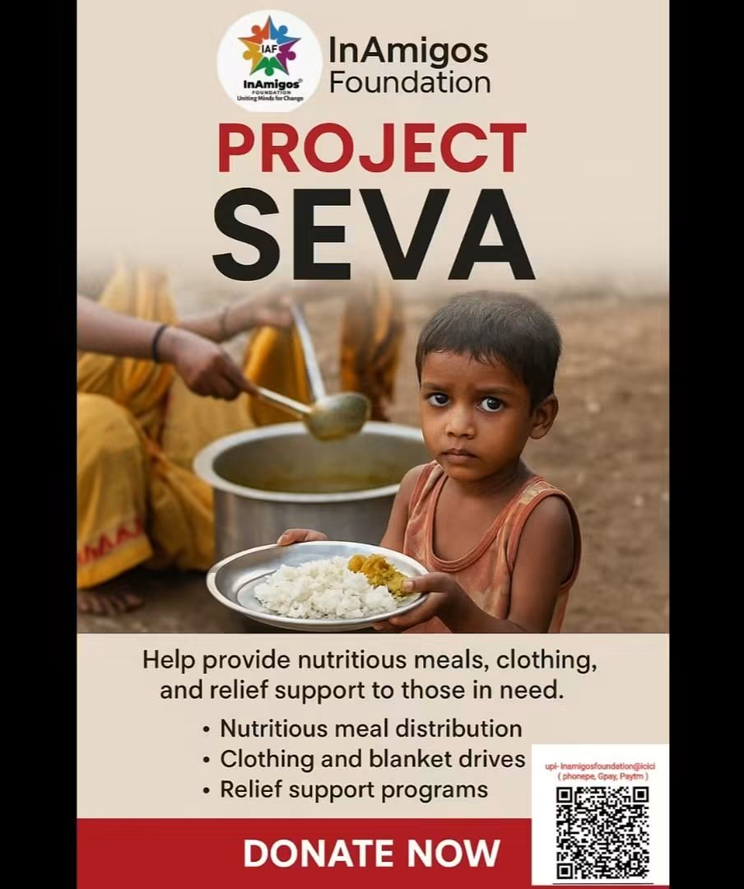
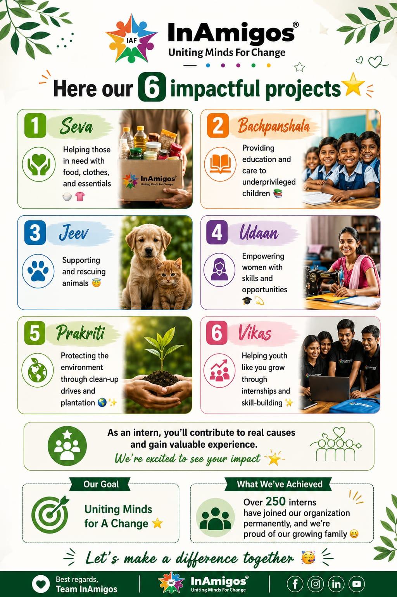
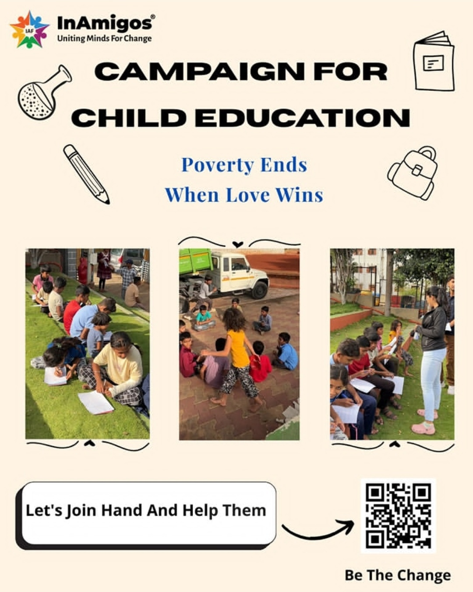
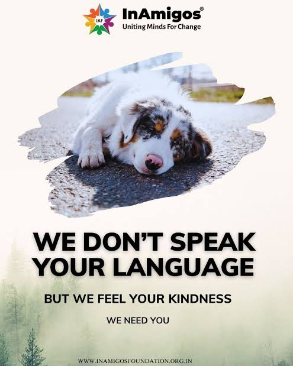
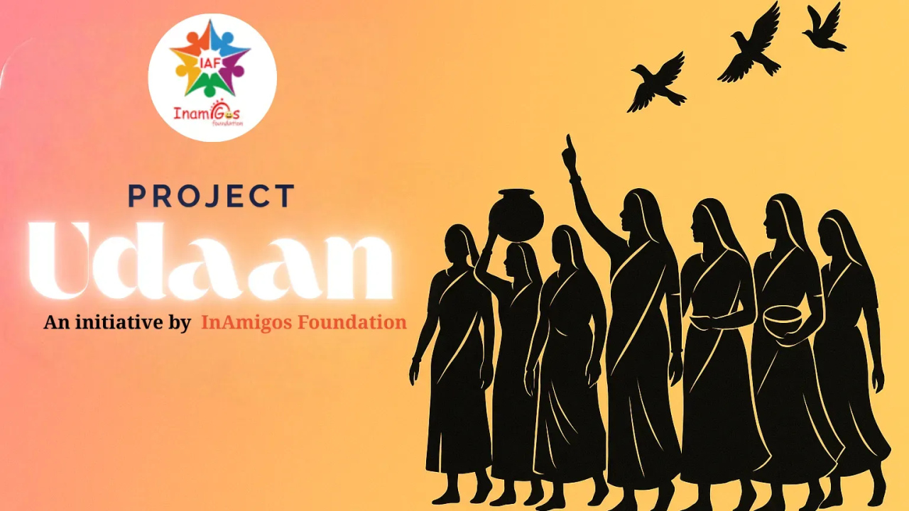

Food Security🍲 Project Seva
Dedicated food and clothing distribution drives designed to alleviate hunger and provide warmth to homeless, daily-wage, and vulnerable individuals.
InAmigos Foundation is a Section 8 registered, ISO 9001:2015 certified non-profit organization originating in Chhattisgarh and driving transformative grassroots change all across India.

Founded on September 23, 2020 by Govind Shukla (Founder & CEO), the mission of InAmigos Foundation is to uplift underprivileged and marginalized communities through comprehensive, sustainable initiatives in education, healthcare, livelihood development, environmental protection, and social inclusion.
Powered by thousands of dedicated youth volunteers, community champions, and socially responsible CSR partners, we bridge the gap between resources and grassroots needs to build an equitable, self-reliant future for all.
Mobilizing enthusiastic youth, students, and professionals to lead real-world on-ground change.
Creating long-term community value rather than temporary fixes across our focus areas.
Governed with full accountability, compliant with Section 8, CSR-1, and NITI Aayog standards.
Through targeted initiatives, we address critical challenges spanning food security, education, animal welfare, women empowerment, environment, and youth skills.

Food SecurityDedicated food and clothing distribution drives designed to alleviate hunger and provide warmth to homeless, daily-wage, and vulnerable individuals.

Child EducationProviding foundational education, free learning kits, and positive mentorship to underprivileged children to keep them in school and build brighter futures.

Animal WelfareRescuing injured stray animals, administering first aid, organizing regular feeding drives, and promoting awareness for compassionate animal welfare.

Women EmpowermentEnabling women from marginalized backgrounds to achieve financial independence, learn vocational skills, and access health and menstrual hygiene awareness.
 Environment
Environment
Leading massive tree plantation campaigns, plastic cleanup drives, and community eco-awareness sessions to protect our planet and fight climate change.
Fostering youth employability through structured internship programs, career readiness training, leadership opportunities, and technical upskilling.
Whether you want to volunteer on weekends, support our drives, partner for CSR initiatives, or build your skills through an internship — your participation makes a lasting difference.